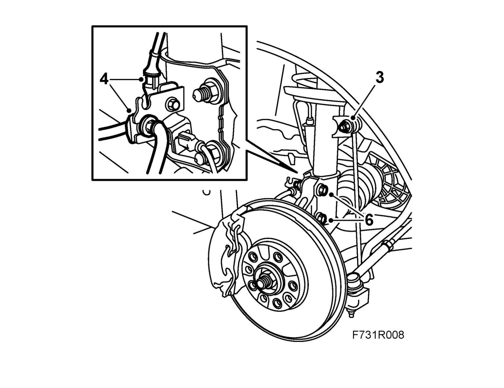
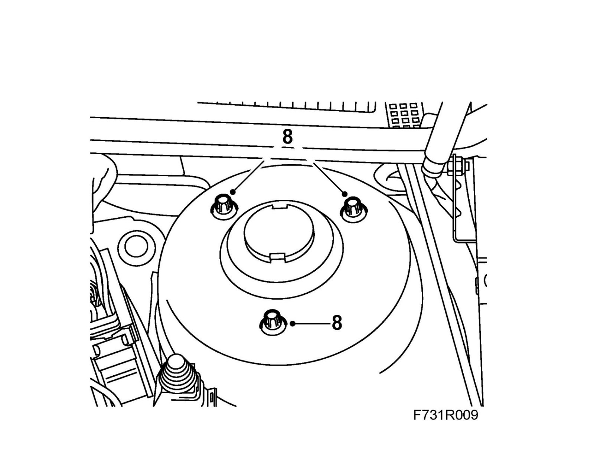
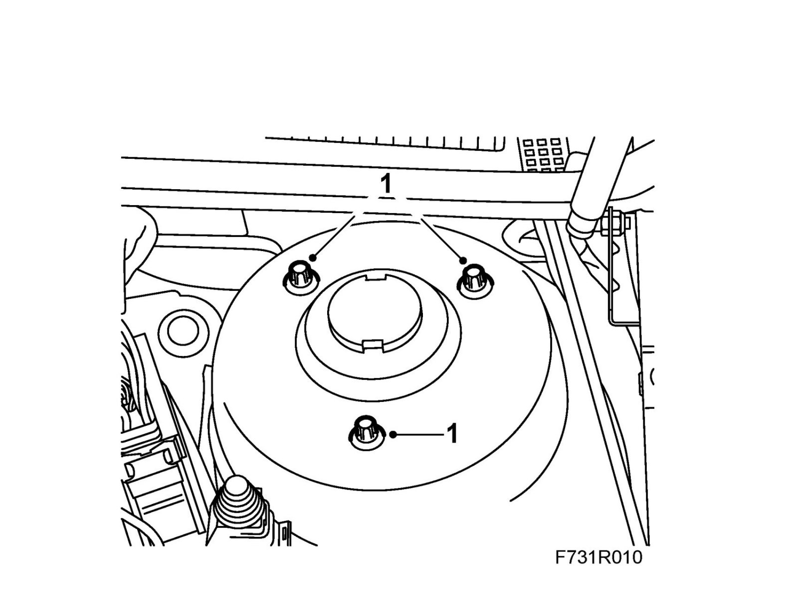

Front Suspension
MacPherson strutTo remove
1. Raise the car.
2. Remove the wheel.
3. Remove the upper nut from the anti-roll bar link, hold with a 17 mm open wrench.

4. Remove the holder for the wheel sensor connector housing and the brake hose clip.
5. Relieve the steering spindle member from bearing weight using a jack. Allow the jack to remain during the entire operation.
6. Remove the steering swivel member from the MacPherson strut. Hold the bolt with a wrench so that the bolt does not rotate.
7. Withdraw the steering swivel member from the suspension strut.
8. Remove the bolts from the upper attachment of the MacPherson strut.

9. Remove the MacPherson strut.
To fit
1. Position the MacPherson strut into place and fit the bolts in the upper attachment.
Note
The fitting holes are not symmetrical.
Tighten the bolts alternately.
Tightening torque 19 Nm (14 lbf ft)

2. Raise the steering swivel member against the MacPherson strut, press the steering swivel member into the MacPherson strut.
Fit the bolts and tighten the nuts holding the steering swivel member to the MacPherson strut. Hold with a wrench so that the bolt does not rotate.
Tightening torque 80 Nm +135° (59 lbf ft +135°)
3. Fit the upper nut to the anti-roll bar link.
Tightening torque 64 Nm (47 lbf ft)
4. Fit the bracket for the wheel sensor cable.
Fit the brake hose and clip.
5. Fit the wheel.
6. Lower the car to the floor.